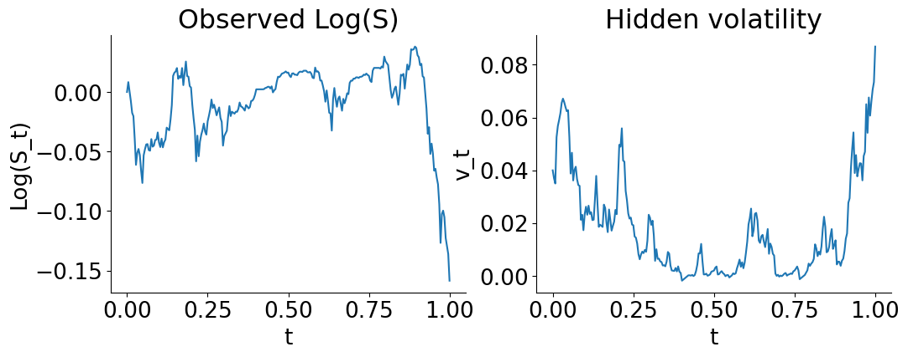
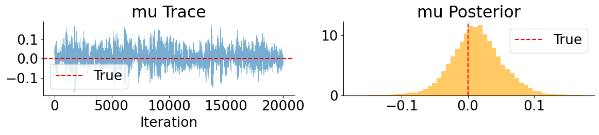
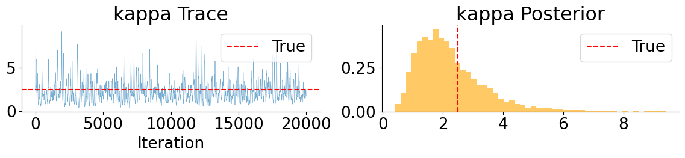
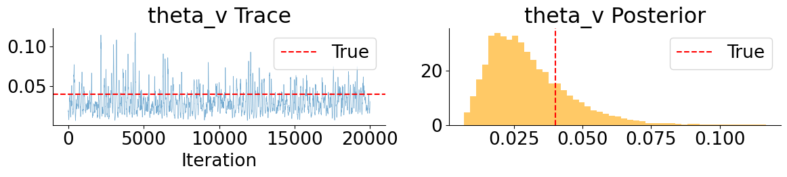
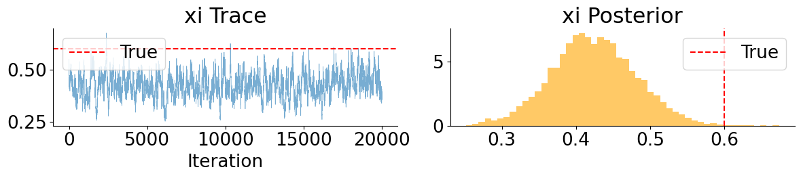
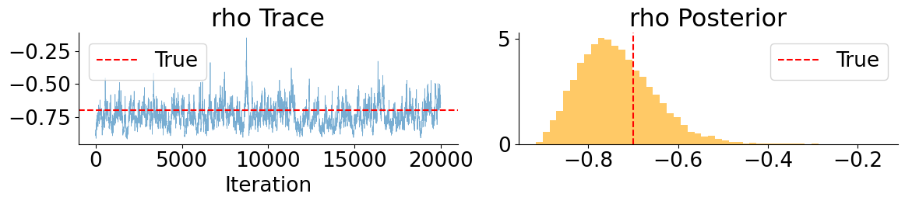
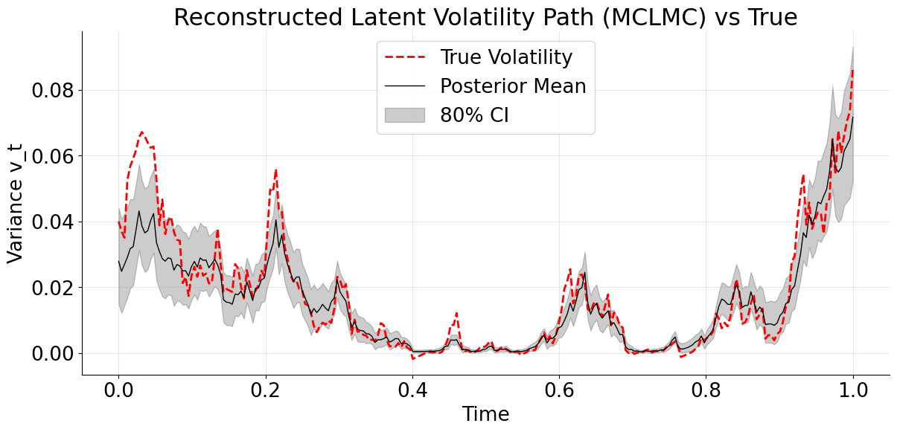
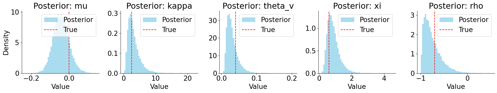
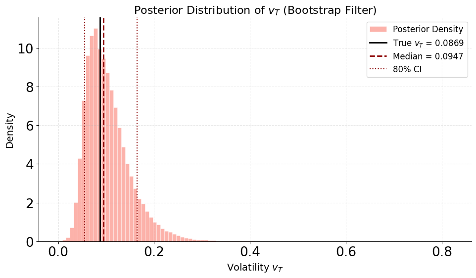
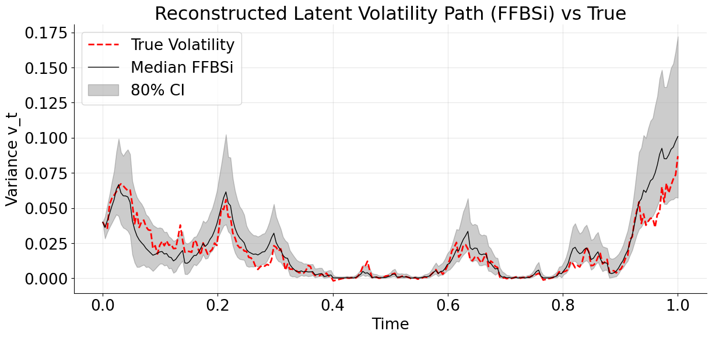

Introduction
In the few years since I first got interested in probabilistic machine learning, there have been some significant algorithmic improvements, especially in the JAX ecosystem, and I thought that it would be a good time to revisit an old blog post about modeling stochastic processes, and show a couple of more modern algorithms that tackle this type of problem.
At the time, NUTS was the standard MCMC algorithm for a wide range of problems, and was especially shining when the inference involved a fairly high-dimensional latent space. The initial motivation of that old blog post was to reimplement the S&P500 example in TensorFlow-Probability.
Four years later, the new go-to method for high dimensional latent spaces like the ones that arise in stochastic processes is Microcanonical Langevin Monte Carlo (MCLMC), and it is implemented Blackjax, a collection of state-of-the-art samplers (one of the examples there is precisely the stochastic volatility model of the S&P500 returns). This is the first example discussed below.
In parallel, there have some efforts to implement distributions and bijectors in JAX that were not yet supported by the JAX substrate of TensorFlow-Probability. The result is the Distrax library, which includes flow models. This greatly facilitates the execution of simulation-based inference algorithms in JAX, such as neural posterior estimation (NPE). This method can be used to quickly estimate posterior distributions over stochastic differential equation (SDE) parameters given observations of one or more realisations of the process. The computational cost is paid upfront when the estimator is trained on simulations of the process for a wide range of SDE parameters drawn from their prior distribution. There happens to be another JAX library that accelerates this type of simulation, namely Diffrax. The second example combines NPE with a particle filter to estimate the latent states of the SDE model.
Toy problem
To illustrate these two methods, synthetic data generated by a known SDE system offers the benefit of knowing the ground truth. We will consider the Heston model
\[ \begin{aligned} dS_t &= \mu\, S_t\, dt + \sqrt{v_t}\, S_t\, dW_t^{(1)}, \\ dv_t &= \kappa\bigl(\theta - v_t\bigr)\, dt + \xi \sqrt{v_t}\, dW_t^{(2)}, \\ d\langle W^{(1)}, W^{(2)}\rangle_t &= \rho\, dt, \end{aligned} \]
which is a generalization of the geometric Brownian motion with a stochastic volatility process. It is straightforward to simulate a realisation of this process for a given set of parameter values with diffrax.
The assumption here is that we can only observe \(S(t)\) (with this model, it is usually the price of an asset evolving over time) for \(t \in \left[0, T\right]\), with a drift driven by an unobserved volatility \(v(t)\). The goal is to infer the parameters of the model from the observed trajectory \(S(t)\), and either estimate the whole hidden trajectory \(v(t)\), or just its final value \(v(T)\). In practice, the whole trajectory would be interesting to economists who might want to find out what factors drive the volatility of a given asset, and the final value \(v(T)\) would be useful to risk managers who want to simulate the future evolution of \(S(t)\) for \(t>T\), and especially the range of possible scenarios (which is essential to quantify the uncertainty in these predictions). Concretely, the parameters would let them know how to draw the future curves, and \(v(T)\) would inform them on the initial conditions \((S(T), v(T))\) of these future curves.
Microcanonical Langevin Monte Carlo
The SDE model assumes a continuous \(t\), but in practice numerical integrators discretize it into a number of timesteps \(t_i\), and \(v_i = v(t_i)\) has to be estimated for each of them if we want to reconstruct this hidden part of the process. This is what makes the inference problem high-dimensional and more difficult for Monte Carlo samplers of the posterior distribution. Algorithms based on Hamiltonian dynamics such as HMC or NUTS made some progress in that area, but they can still suffer from slow mixing and poor exploration of the posterior distribution when the energy landscape is complex, for instance when when some variables are highly correlated (like \(v_i\) and \(v_{i+1}\)). Microcanonical Langevin Monte Carlo (MCLMC) combines ideas from Hamiltonian dynamics, Langevin diffusion, and microcanonical (i.e. constant-energy in statistical mechanics parlance) sampling, which makes it effective with these problems. In practice, Langevin methods add noise, which improves slow mixing, but this often degrades long-range exploration. MCLMC corrects this degradation by preserving energy over short time.
As a result, MCLMC is especially useful when: - the posterior is high-dimensional, - gradients are available, - the geometry is highly anisotropic, - long-range exploration matters more than exact reversibility per step.
This makes it attractive for latent time-series models, SDE parameter inference, or Bayesian inverse problems with stiff dynamics.
The Langevin part of MCLMC is itself implemented as a discretized SDE constrained to the energy shell. So if the timestep is too large, if the projection is approximate, or if noise is not exactly tangent, then the discretization can introduce a small stationary bias or an energy drift that invalidates the microcanonical assumption, both of which would impact the exactness of the posterior estimate. A sanity check suggested in the Blackjax documentation is to decrease the step size of the Langevin SDE and see if results remain consistent, or to apply an adjusted version of MCLMC, also implemented in Blackjax.





These MCLMC marginals reveal a clear separation between well- and weakly-behaved parameters. Drift and leverage parameters (\(\mu\) and \(\rho\)) are accurately recovered and exhibit good mixing, while mean-reversion parameters (\(\kappa\) and \(\theta_v\)) remain weakly identified but consistent with the true values. In contrast, the volatility-of-volatility parameter \(\xi\) is systematically underestimated, with the true value lying in the tail of the posterior. This bias is not due to poor mixing, but is consistent with Euler discretization effects in SDE parameter inference, where diffusion parameters absorb model error when the discretized dynamics are treated as exact.

The MCLMC-smoothed volatility path correctly captures the temporal structure of volatility regimes, but exhibits systematic amplitude damping, with peaks consistently lower than the true latent path. This behavior mirrors the downward bias observed in the inferred volatility-of-volatility parameter and reflects the tendency of Euler-discretized gradient-based inference to favor smoother latent trajectories when discretization error is treated as exact. Also note that the 80% credible interval tightens in low-vol regimes and widens during spikes, with no pathological overconfidence.
Hybrid inference
The MCLMC results highlight a key limitation of gradient-based inference for discretized stochastic volatility models: while the temporal structure of the latent volatility is recovered, diffusion parameters are biased and volatility amplitudes are systematically damped. This motivates a different strategy that avoids differentiating through discretized latent paths altogether. In this section, we adopt a hybrid approach that combines neural posterior estimation (NPE) for fast, amortized parameter inference with particle filtering for latent state inference. This decouples parameter learning from latent path discretization, while retaining principled uncertainty quantification.
Neural posterior estimation of the SDE parameters
The general idea of neural network methods in simulation-based inference is to sample model parameters from a prior distribution,
\[ \theta \sim \pi(\theta), \]
and use a pure simulator model to generate synthetic observations
\[ x = f_{sim}(\theta). \]
The difference with a standard statistical model is that the simulator model does not need to come with a likelihood function. Instead, we assume that the pairs \((\theta, x)\) are drawn from an unknown joint distribution,
\[ (\theta, x) \sim P(\theta, x) = \pi(\theta)\, P(x \vert \theta), \]
and we use conditional neural density estimation on this synthetic data to estimate quantities of interest, like the intractable likelihood when conditioning on \(\theta\), or a posterior density estimator when conditioning on \(x\). See this practical guide for more details.
In the case of SDE, it means that we only need to use the integrator to simulate realizations of the process.
The main benefits of NPE in SDE problems are that it avoids taking gradients through noisy simulators, and amortized inference is cheap at test time.
Nevertheless, NPE is not a silver bullet as neural density estimation is most effective in relatively low dimensions. We can use it to infer the parameters \(\theta\), but the hidden volatility trajectory \(v_t\) would probably be too much, which is why we defer its esimation to a second stage based on particle filtering. Likewise, on the input side, the dimensionality of the full trajectory of \(S_t\) is too high, but we can condense it into carefully crafted summary statistics.
These include realized variance and higher moments to capture volatility scale, autocorrelations of squared returns to capture persistence, explicit leverage statistics linking returns to future volatility, and a coarse term structure of realized variance to encode longer-horizon dynamics. This choice balances expressiveness and robustness: the summaries are informative about the Heston parameters while avoiding the curse of dimensionality and excessive sensitivity to discretization noise.
The heaviest coding in this pipeline is the implementation of the neural density estimation model. As mentioned in the introduction, the Distrax library contains all the required building blocks, but putting them together can be tedious, especially if the parameters require unconstraining bijectors to map them to \(\mathbb{R}\). The relevant flow model example in the library documentation is a good starting point.
The model is trained by minimizing the negative log-likelihood of the synthetic data.
Once this is done, we get a flow-based distribution \(q_{nn}(\theta \vert x)\) that is an approximation of the true posterior \(p(\theta \vert x)\). The vector of summary statistics \(x_{obs}\) of the observed trajectory \(S_{1:T}\) is passed to the conditional flow model as the conditioning variable, and we can draw Monte Carlo samples
\[ \theta^{(i)} \sim q_{nn}(\theta \vert x_{obs}) \approx p(\theta \vert x_{obs}), \quad i=1,\dots ,\, M \]
The downstream task of particle filtering requires the values of the parameters transformed by the unconstraining bijectors, and the posterior log-densities of these sampled parameter values if we find we need to improve the approximation \(q_{nn}(\theta \vert x_{obs}) \approx p(\theta \vert x_{obs})\) with corrective weights, so the best is to wrap the neural sampler into a function that returns the parameters, their unconstrained versions, along with their posterior log-densities.

The neural posterior exhibits the expected skewness and uncertainty structure of the Heston model, with weak identifiability for diffusion parameters and good recovery of drift and leverage effects, indicating a well-calibrated amortized approximation.
Compared to MCLMC, NPE produces less concentrated but better-calibrated posteriors, avoiding discretization-induced bias at the cost of explicitly acknowledging weak identifiability.
Particle filtering
In certain applications, estimating the SDE parameters is enough, but if we want to forecast the future evolution of the process, we need to know the distribution of \(v_T\) as well. For a given estimate \(\hat\theta\) of the SDE parameters \(\theta\), which can be for instance the Monte Carlo estimate \(\sum_{i=1}^M \theta^{(i)}\) of the posterior mean or just a single \(\theta^{(i)}\), we can run a particle filter to infer the hidden states.
In the Bayesian philosophy, we would prefer to marginalize out the SDE parameters,
\[ p(v_T \vert S_{1:T}) \;=\; \int p(v_T \vert S_{1:T}, \theta)\, p(\theta \vert S_{1:T}) \, d\theta. \]
The best approximation we have of this integral is a Monte Carlo estimate,
\[ p(v_T \vert S_{1:T}) \;\approx\; \frac{1}{M} \sum_{m=1}^M p\!\left(v_T \vert S_{1:T}, \theta^{(m)}\right), \qquad \theta^{(i)} \sim q_{nn}(\theta \vert x_{obs}) \approx p(\theta \vert x_{obs}) \]
where the terms can be in turn approximated by the particle filter we discussed,
\[ p\!\left(v_T \vert S_{1:T}, \theta^{(m)}\right) \;\approx\; \sum_{i=1}^N w_T^{(m,i)}\, \delta\!\left(v_T - v_T^{(m,i)}\right), \]
and overall we get the double sum of weighted particles
\[ p(v_T \vert S_{1:T}) \;\approx\; \frac{1}{M} \sum_{m=1}^M \sum_{i=1}^N w_T^{(m,i)}\, \delta\!\left(v_T - v_T^{(m,i)}\right). \]
The relative weights of the particles of two parameter vectors \(\theta^{(k)}\) \(\theta^{(l)}\) are the same, but since they are drawn from an approximation \(q_{nn}(\theta \vert x_{obs}) \approx p(\theta \vert x_{obs})\) of the true posterior, we might find while running the particle filter that \(\theta^{(k)}\) explains the whole sequence of observatons \(S_{1:T}\) better than \(\theta^{(l)}\) and thus deserves a higher weight.
Concretely, for every \(\theta^{(m)}\), the particle filter estimates the actual marginal likelihood of the observation \(p_{pf}(x_{obs}|\theta^{(m)})\). We can then calculate importance weights that correct the mismatch with the neural estimation of the posterior,
\[ w_m \propto \frac{p_{pf}(x_{obs}|\theta^{(m)})\, \pi(\theta^{(m)})}{q_{nn}(\theta^{(m)}|x)}. \]
The calculation of these importance weights is the reason why we recorded the log-densities when sampling from the flow model.
In practice,\(p_{pf}(x_{obs}|\theta^{(m)})\) is also an inexact approximation, so a tempering exponent \(\alpha\) should be applied to these importance weights.
\[ \tilde w_m(\alpha) \propto \left( \frac{p_{pf}(x_{obs}|\theta^{(m)})\, \pi(\theta^{(m)})}{q_{nn}(\theta^{(m)}|x)} \right)^\alpha, \qquad \alpha \in [0,1]. \]
The tempering parameter \(\alpha\) interpolates between the neural posterior ( \(\alpha = 0\)) and a fully particle filter likelihood-corrected posterior (\(\alpha = 1\)), mitigating importance weight degeneracy caused by noisy particle filter likelihood estimates.
To tune the value of \(\alpha\), comparing the effective sample size with the number of particles is a good rule of thumbs.
The result is a large pool of weighted particles approximating the full marginal posterior of the final volatility \(p(v_{T} | S_{1:T})\), accounting for parameter uncertainty.

Despite this asymmetry, the posterior is well centered: the true value lies comfortably within the 80% credible interval, and the posterior median slightly overestimates \(v_T\), reflecting residual uncertainty in the volatility-of-volatility parameter. The long right tail highlights the fact that high terminal volatility scenarios remain plausible given the data, a feature that would be difficult to capture with moment-based or Gaussian approximations. Overall, this marginal illustrates how the hybrid NPE + PF approach preserves uncertainty in both parameters and states without collapsing onto a single volatility trajectory.
Smoothing
If we are interested in the complete hidden volatility trajectory \(v_{0:T}\) and not just the terminal state, we have to infer the posterior distribution \(p(v_{0:T} \vert S_{0:T})\) of the full history. A particle filter only uses past observations to estimate volatility at a certain time point \(t\), meaning it infers \(p(v_t | S_{0:t})\), which is wasteful for lower values of \(t\) in the early trajectory. A common way around this problem is to apply a forward filtering backward simulation (FFBSi) algorithm (see this survey for more details) to include the information of the whole observed trajectory.
In practice, the function that implements the forward particle filter needs to get updated to store the particle trajectories, that can be fed into the backward simulator function.
The same tempered reweighting as in the filtering task can be applied to marginalize out the SDE parameters.

The median FFBSi trajectory follows the level, timing, and regime changes of the true latent variance meaningfully. The 80% credible interval behaves sensibly, widening when volatility is high and tightening in calm regimes. The true path stays inside the band most of the time, without the band being trivially over-wide. The variance increases sharply toward the end, but this is a realistic behavior at the end-of-horizon where information progressively disappears.
The two-stages method clearly shines here by guiding the FFBSi smoothing with better parameter estimates from the NPE stage than what is achieved with MCLMC.
Conclusion
We considered two different ways of performing Bayesian inference in the Heston stochastic volatility model, and how those choices affect both parameter estimates and inferred volatility paths. Gradient-based methods like MCLMC can work remarkably well in practice: they recover the timing of volatility regimes and produce clean-looking posteriors. However, when the latent dynamics is discretized and treated as exact, these methods tend to absorb model error into weakly identifiable parameters, leading to overly confident and systematically biased inference, especially for diffusion-related quantities.
To get around this, we explored a hybrid strategy that separates the problem into two pieces. Neural posterior estimation is used to infer SDE parameters from informative summary statistics of the observed trajectory, without ever differentiating through latent volatility paths. Particle filtering and smoothing are then applied conditionally on sampled parameters to recover latent volatility trajectories and marginal state uncertainty. This decoupling turns out to be crucial: uncertainty that would otherwise collapse into biased point estimates is instead preserved and propagated downstream.
In practice, the NPE + PF approach produces broader but better-calibrated parameter posteriors and more realistic volatility reconstructions. Sharp volatility spikes are no longer systematically damped, credible intervals behave sensibly, and marginal state distributions remain skewed where they should be. While the method is more computationally involved than a single end-to-end sampler, it provides a clearer picture of what the data actually support, and what they do not.
More generally, this case study highlights a common pitfall in latent SDE inference: when models are approximate, apparent precision can be misleading. In such settings, inference pipelines that modularize uncertainty and avoid over-committing to discretized dynamics can offer a more robust and interpretable alternative.